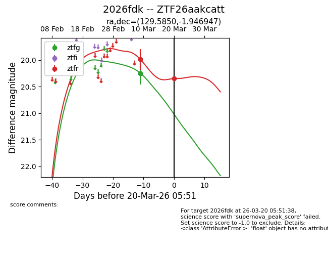
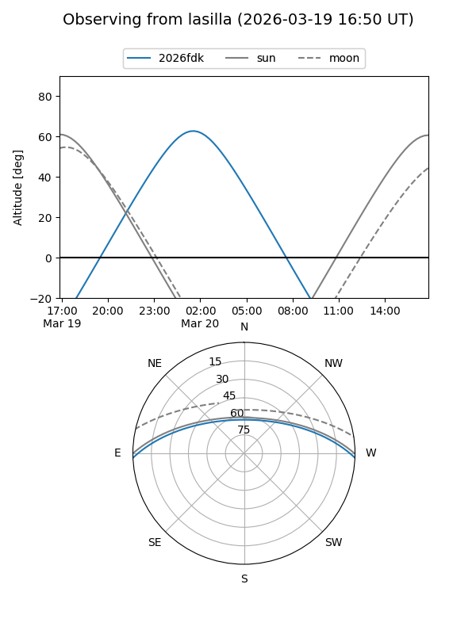
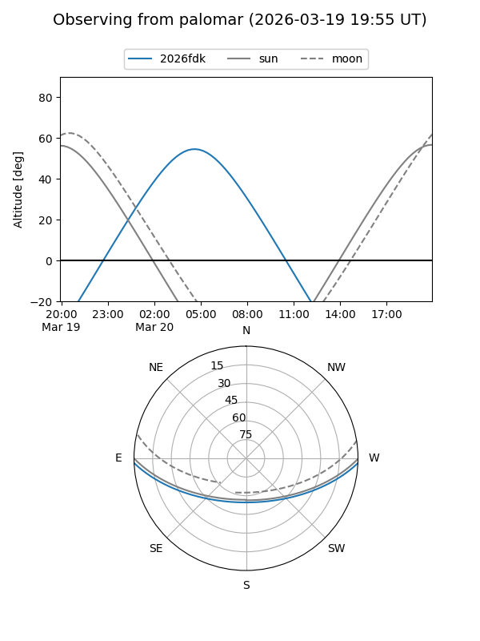
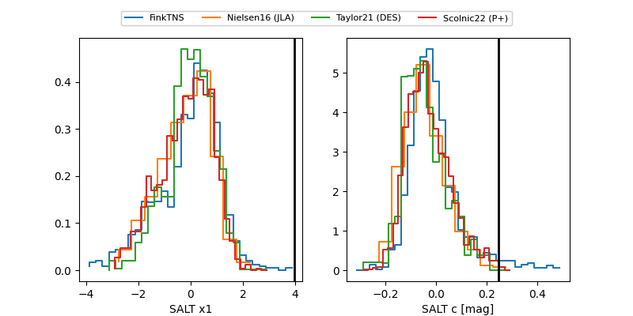

2026fdk
Target 2026fdk at 2026-03-20 05:53
Aliases and brokers:
FINK: link
Lasair: link
ALeRCE: link
TNS: link
YSE: link
alt names
ZTF26aakcatt (ztf,fink_ztf)
2026fdk (tns,yse)
Coordinates:
equatorial (ra, dec) = 129.5850,-1.94695
equatorial (HMS+DMS) = 08:38:20.40,-01:56:49.01
galactic (l, b) = (227.6918,+22.61395)
Flags:
Photometry:
last ztfg=20.25, ztfr=20.35
1 ztfg, 2 ztfr detections
Lightcurve

Visibility


Additional plots
